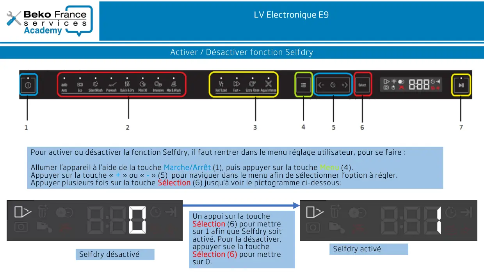
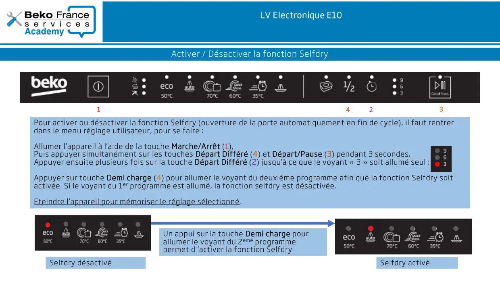

Activation ou Désactivation Selfdry lave vaisselle E9 et E10

SENSITIVITY:PUBLICLV Electronique E9Activer / Désactiver fonction SelfdryPour activer ou désactiver la fonction Selfdry, il faut rentrer dans le menu réglage utilisateur, pour se faire :Allumer l’appareil à l’aide de la touche Marche/Arrêt (1), puis appuyer sur la touche Menu (4).Appuyer sur la touche « + » ou « - » (5) pour naviguer dans le menu afin de sélectionner l’option à régler.Appuyer plusieurs fois sur la touche Sélection (6) jusqu’à voir le pictogramme ci-dessous:Selfdry désactivéSelfdry activéUn appui sur la toucheSélection (6) pour mettresur 1 afin que Selfdry soitactivé. Pour la désactiver,appuyer sue la toucheSélection (6) pour mettresur 0.
1 / 2
SENSITIVITY:PUBLICLV Electronique E10Activer / Désactiver la fonction SelfdryPour activer ou désactiver la fonction Selfdry (ouverture de la porte automatiquement en fin de cycle), il faut rentrerdans le menu réglage utilisateur, pour se faire :Allumer l’appareil à l’aide de la touche Marche/Arrêt (1),Puis appuyer simultanément sur les touches Départ Différé (4) et Départ/Pause (3) pendant 3 secondes.Appuyer ensuite plusieurs fois sur la touche Départ Différé (2) jusqu’à ce que le voyant « 3 » soit allumé seul :Appuyer sur touche Demi charge (4) pour allumer le voyant du deuxième programme afin que la fonction Selfdry soitactivée. Si le voyant du 1er programme est allumé, la fonction selfdry est désactivée.Eteindre l’appareil pour mémoriser le réglage sélectionné.Selfdry désactivéSelfdry activéUn appui sur la touche Demi charge pourallumer le voyant du 2ème programmepermet d ’activer la fonction Selfdry1234
2 / 2